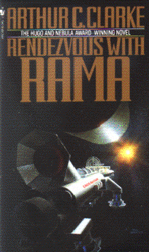

Rendezvous with Ramaby Arthur C. Clarke
publisher: Bantam Spectra
Fiction, 243 pages | 
(book cover art, Copyright ©1990 Paul Swendsen)
Used with Permission. |
Return to the Book MenuPrevious|Next
Description:
In 2130, an object is discovered hurtling through our solar
system. It is not a comet, or an asteroid, but a spaceship.
A delegation is sent to this huge rotating cylinder to determine its purpose
and possible threat to the solar system. A great story that has spawned
numerous sequels.
Recommended for: adventure lovers, explorers, space
enthusiasts.
Note: I recommend you read the samples at the end of the book for
other good reading ideas!
Did-you-read questions:
Deadline: February 1, 2005.
These should be easy questions, but you should have the questions ready and keep an eye out during your reading. Each question should be answered with 1-2 sentences.
Note: these questions are not probably not the most important part of the book! Your essay will not have to cover these questions!
- What was the first clue that Rama was not a natural object?
- What are the contents of the cylindrical sea?
- Ramans always do things in multiples of what number?
- What kind of intruder invades Camp Alpha?
- What step do the Hermians take to counteract the perceived threat of Rama?
Report Questions:Deadline: Peer Review Session on February 8, 2005; paper due February 10, 2005.
You should write a 3 - 4 page essay on one of the following questions. Your essay should include examples and references to the book, unless otherwise specified. Page number references are sufficient for citing material from the primary book. If you use outside materials, cite your sources in full. If you would rather write on a different topic, you may, but clear it with Mr. Howe or Ms. Sullivan first.
- "Gravity" on Rama was produced by rotation of the cylinder at a specified
rate. Discuss the problems in daily life with this system.
- If scientists were to discover a Rama-like object tomorrow, should we send
a delegation? If so, would you want to be a member?
- Should Rama have been destroyed, when there was still a question about
its ultimate purpose in our solar system?
- Should a couple of people have stayed behind in Rama, to see where it was
going? (This is part of the plot of the several sequels).
Graphic and Presentation:
Deadline: February 21 - March 3, 2005.You will give a 10 minute presentation on both of the following:
- Convince your peers that they should (or should not) read this book. (This may include a brief summary of the book.) Give examples of what was cool or worthwhile in the book, and what you got out of it (or didn't).
- Describe a (realistic) science idea that you learned about in this book, citing information from at least 2 external sources (other than the dictionary). If you would like help choosing or understanding an idea from your book, you are invited to come talk to Mr. Howe or Ms. Sullivan.
Note: This presentation should not be just a reading of your paper!Along with this presentation, you should have a graphic that will go with it. A Power Point presentation is recommended, but if you have a special idea for a something else, such as a model, an original video presentation, or a well done drawing/ painting/ sculpture/ etc., you may do so, provided it involves a similar level of effort and polish. Speak to Mr. Howe or Ms. Sullivan first if you are considering an alternate graphic format to the Power Point.
Return to the Book MenuPrevious|Next